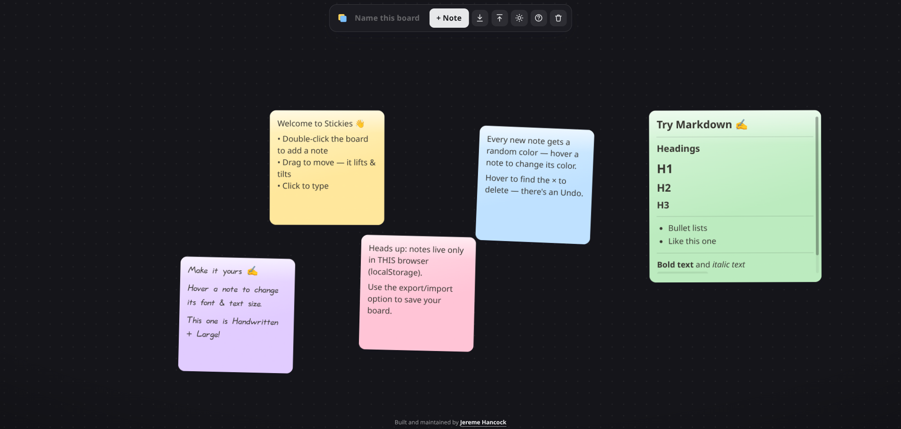

Stickies

A Sticky Note App That Doesn't Want Your Email
Every note-taking app eventually asks you for the same thing. Make an account. Confirm your email. Pick a workspace. Maybe a free trial of the tier that actually syncs. You wanted somewhere to dump a phone number before it left your head, and now you're managing a subscription. It's a lot of ceremony for the digital equivalent of a Post-it.
So I built the opposite. Stickies is a sticky-note whiteboard that opens instantly, asks for nothing, and forgets you the moment you want it to. No account, no server, no sync, no cloud. You double-click an empty board, a note appears, you type. That's the entire onboarding.
And it's built the way I like building these: vanilla HTML, CSS, and JavaScript. No framework, no build step, no dependencies. This time it's not even two files — it's one. Open index.html and you're done.
A board you just start using
There's no tutorial because there's nothing to learn. Double-click anywhere on the board to drop a note, or hit + Note if you'd rather. Click a note and start writing. Hover over a note and tap a color dot to recolor it, or set the color for new notes from the top bar. Done with a note? Hover, hit ×, and it's gone — with an Undo waiting (and Ctrl/⌘+Z, because muscle memory is real).
You can rename the board by clicking its name in the top bar, and the browser tab quietly renames itself to match. It opens in dark mode, because of course it does, and there's a sun/moon toggle if you disagree — your choice sticks on that device. The whole thing works with a mouse or a thumb, so it's just as usable on a phone as it is on a laptop.
The whole app is one file
Here's the part that makes it more than a toy. There's no backend. Nothing leaves your machine. Your notes, the board's name, your theme choice — all of it lives in your browser's localStorage, on this device, in this browser. The page doesn't phone home because there's no home to phone. You could pull your network cable out and lose nothing.
That's also the honest tradeoff: this is a scratchpad, not a vault. Notes aren't synced, shared, or backed up. Clear your browser data or open it in a private window and they're gone. It's the digital version of a physical sticky note — convenient, immediate, and yours, right up until you throw it away.
The detail I'm quietly proud of
The thing that took a flat board and gave it a personality is the dragging. Grab a note and it lifts — picks up off the board like you've peeled it loose. Fling it and it tilts toward the direction you're throwing, the way a real piece of paper leans into momentum. Let go and it springs back to rest, settling instead of snapping.
None of that is necessary. A note that teleported from point A to point B would store the same text just fine. But the little bit of physics is what makes the board feel like a surface and the notes feel like objects on it, rather than divs in a grid. It's the smallest possible amount of delight, and it's my favorite part.
When you actually want to keep something
Because everything lives in one browser, there's an escape hatch for the moment you want a note to outlive it. The ↓ button exports the whole board to a stickies-<board-name>.json file, and the ↑ button imports one back. Each pops a short explainer first so nobody's surprised by what the button does. The file is written locally — nothing is uploaded — so you can stash it, back it up, or carry a board to another browser or device and import it there.
One asterisk worth saying out loud: importing completely overwrites whatever board is in that browser, and there's no undo for it. So if the current board has anything you care about, export it first. It's the one spot where "it just works" comes with a seatbelt sign.
Who this is for
If you've ever opened a note app, hit a signup wall, and closed the tab — this is for you. It's for jotting the thing you'll need in ninety seconds, the address, the half-formed idea, the list you'll throw away by lunch. It loads instantly, runs entirely on your machine, and never asks who you are. Park index.html on any static host, or honestly just open the file off your disk and start typing.
It's also another small argument for the same thing I keep coming back to: "no build step" is still a perfectly good answer. The whole app is one file and a little bit of fling physics.
AI Disclosure
This project was created with the help of AI.
Links
- GitHub: jeremehancock/Stickies
- Try it now : stickies.dumbprojects.com